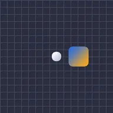

Koppelhulp

Wijzigt hoe een gekoppelde laag zijn bovenliggende laag volgt: schaal en rotatie kunnen volledig volgen, vergrendeld blijven of voor een ingestelde mate volgen. Automatisch draaien draait de laag terwijl hij beweegt, zoals een rollend wiel.
Koppelhulp zet je op een onderliggende laag, een laag die een bovenliggende laag volgt (de koppelknop in de bovenbalk van de editor). Het verandert hoe die laag volgt.
- Schaal en Rotatie: Normaal volgt de bovenliggende laag helemaal, Vergrendeld houdt de eigen grootte of hoek van de onderliggende laag, wat de bovenliggende laag ook doet, en Gewogen volgt volgens het Schaalgewicht of Rotatiegewicht dat je instelt (100 % is helemaal, 50 % half, een negatieve waarde de andere kant op).
- Automatisch draaien draait de laag terwijl hij langs de X-as of de Y-as beweegt, zoals een wiel dat over de grond rolt. Straal aanpassen maakt het wiel groter of kleiner, zodat het langzamer of sneller draait.
Instellingen
| Instelling | Type | Bereik | Standaard |
|---|---|---|---|
| Schaal | Keuze | Normaal, Vergrendeld, Gewogen | Normaal |
| Rotatie | Keuze | Normaal, Vergrendeld, Gewogen | Normaal |
| Schaalgewicht | Getal | -1000% tot 1000% | 100% |
| Rotatiegewicht | Getal | -1000% tot 1000% | 100% |
| Automatisch draaien | Keuze | Uit, X-as, Y-as | Uit |
| Straal aanpassen | Getal | -1000 px tot 1000 px | 0 px |